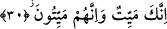
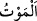

Kur’ân, peygamberlerin halleridir.
Onlar, pâk, ululuk denizinin balıklarıdır.
Kur’ân okur da Kur’ân’da olanları kabul etmezsen,
Peygamberleri ve velîleri sadece görmüş say.
Kıssaları okuyunca kabul edersen,
Can kuşun kafeste daralır.
Kafeste mahpus olan kuş,
Kurtulmak istemezse bilgisizliktendir.
Kafeslerden kurtulan ruhlar,
Liyakatli rehber olan peygamberlerdir.
Bir gün Hz. Hasan ve Hüseyin Peygamber Efendimiz (a.s.)’ın huzurunda oynuyorlardı.
İkisi de Hz. Peygamber (s.a.)’in hoşuna gitmişti. Biraz sonra Cebrâil (a.s.) bir şişe ve
kâğıtla geldi. Şişede kan, kâğıtta ise zehir vardı. Cebrâil (a.s.): “Onları seviyor musun,
ey Muhammed? Şunu bil ki onlardan biri kılıçla öldürülecek. İşte kanı! Diğerine ise
zehir içirilecek. İşte ona içirilecek zehir!” dedi. Hz. Peygamber (s.a.) de bunun üzerine
gönlünü çocuklarından alıp tamamen Allah’a bağladı.
“Allah” deyip de Allah dışındakilerden Allah’a kaçmayan “Allah” dememiştir. Allah
Teâlâ’nın Habîbi’ne: “Allah! de, sonra bırak onları” (el-En’âm, 6/91), yâni onları
bırak sonra “Allah” de, buyurduğu gibi kalbini de ruhunu da bırak, sonra “Allah” de.
Yüce Allah’tan Bizi herşeyden vazgeçip sadece kendisine yönelen ve kendi katında
hazır olanlardan kılmasını niyaz ederiz. Kendisinden istenecek yegâne varlık O’dur.
30. Muhakkak sen de öleceksin, onlar da ölecekler.
Bu âyet, onu takib eden kıyamet günü meydana gelecek olan dâvalaşma konusuna giriş
mâhiyetindedir. Ya da Kureyş kâfirleri Rasûlullah (s.a.)’in ölmesini bekliyorlardı. Yâni
Mekke kafirleri: “Muhammed, nasıl olsa ölecek, o zaman kurtuluruz ondan!” diyorlardı.
Ölüm, varlığa âid bir özellik olup hayatın zıddı olarak yaratılmıştır.
el-Müfredât’ta şöyle der: “
(ölüm)” canlılara mahsus hissedici kuvvenin yok
olması ve ruhun cesedden ayrılması demektir.”
Muhâtabı bu konuda tereddütlü biri yerine koymak, ölümle ilgili delillerin âşikar
olduğuna dikkat çekmek ve bu deliller üzerinde düşünmeye teşvik etmek için âyette
“nun” harfi ile te’kidli olarak ifâde edilmiştir.
Mânâ ise şöyledir: Şüphesiz siz hepiniz ölümün eşiğindesiniz. Ölüm hepiniz için
geneldir. Öyleyse O’nun ölmesini beklemenin ve onun ölmesine sevinmenin mânâsı
yoktur. Aksine bu cehâletin tâ kendisidir.